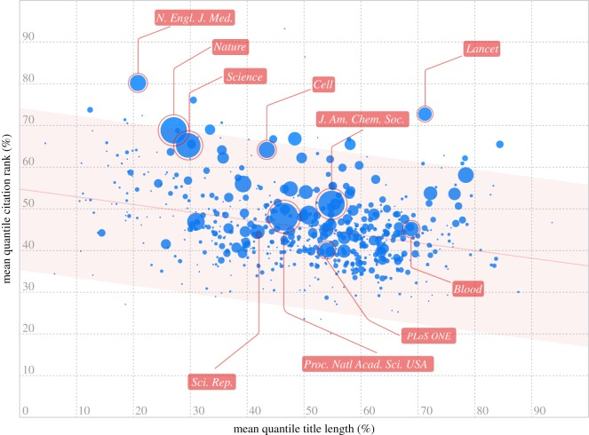
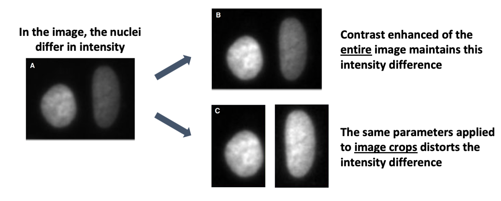
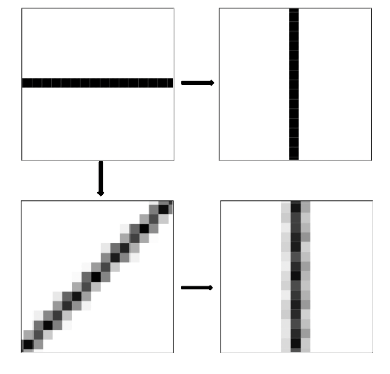
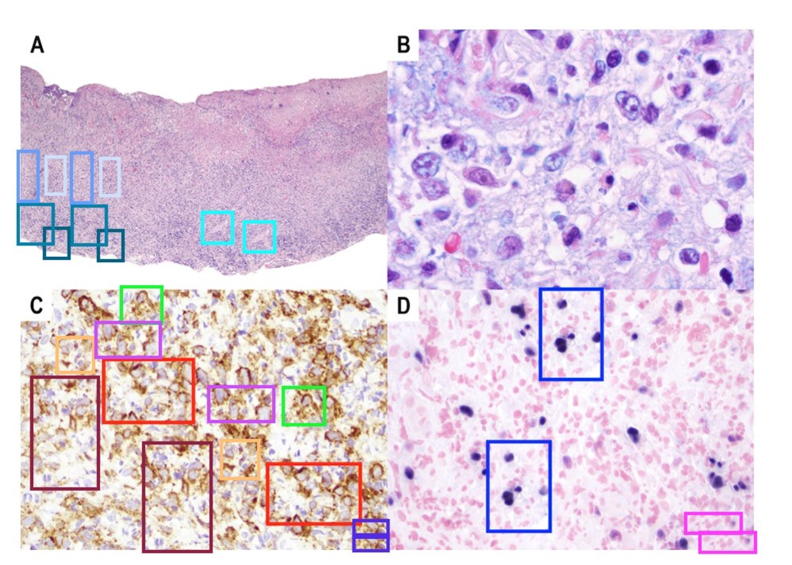
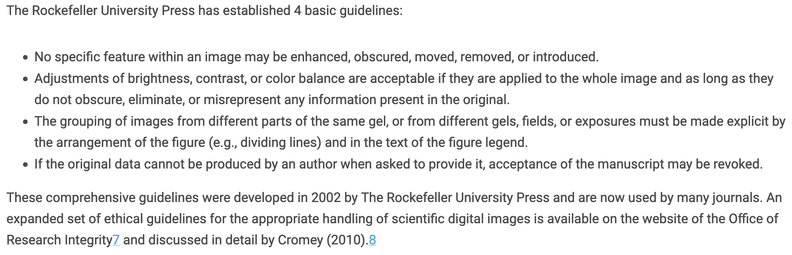
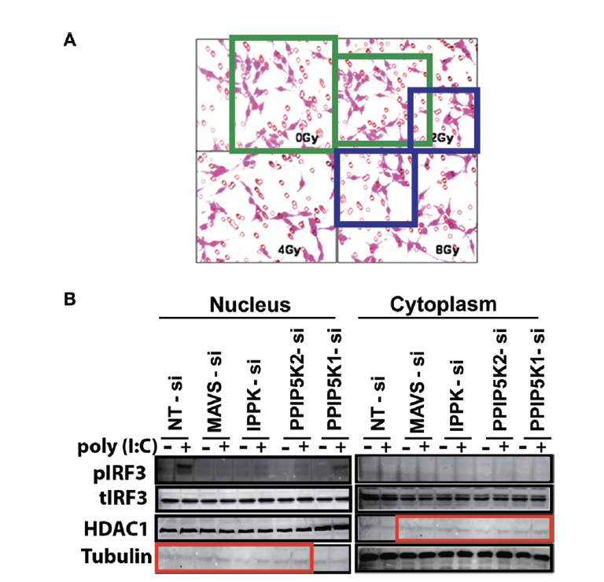

I care about science and images that is widely accessible. At present, that is not always the case. Image figures are confusing and unclear. I have written and published about communicating understandable image data, and last week our community-developed guidelines for publishing understandable images got published.
For scientists it is worth investing time in producing clear papers: incomprehensible data is demonstrably less read, less often cited, and unlikely to be included in the scientific canon. Don’t believe me? Letchford et al have data!

Accidentally misleading images
Published images at times are not just unclear but misleading. This may be because image data was incorrectly processed. I previously wrote about one example published by Miura and Norrelykke, which illustrated that the sequence of contrast adjustment and image cropping matter. I regularly witness the education gap in image handling in my DataViz courses. Graduate students ask: Is it ok to turn images? Can I crop away a neighboring cell? Am I allowed to show green fluorescent protein in red? When images are processed without in-depth knowledge of the software, accidentally misleading images may be the result.


Actually misleading images
Less common than accidentally misleading images, are instances of intentional image manipulation. These are cases when authors fabricate or forge data to mislead audiences. Elisabeth Bik has brought attention to this problem and also quantified instances of image manipulations in publications.

Guidelines to avoid misleading images
Already before Biks quantification and activism, early community initiatives of scientists and editors clarified what counts as image manipulation and which image processing is acceptable for publication. The CSE guidelines are long and update annually! Here is the relevant section on digital image:

Read more
Bik, E.M., Casadevall, A., Fang, F.C., 2016.The Prevalence of Inappropriate Image Duplication in Biomedical Research Publications. mBio 7.

Accurate and reproducible image quality
- Brown, C.M., 2007. Fluorescence microscopy–avoiding the pitfalls. J Cell Sci 120, 1703–1705.
- Faklaris, O., Bancel-Vallée, L., Dauphin, A., Monterroso, B., Frère, P., Geny, D., Manoliu, T., de Rossi, S., Cordelières, F.P., Schapman, D., Nitschke, R., Cau, J., Guilbert, T., 2022. Quality assessment in light microscopy for routine use through simple tools and robust metrics. Journal of Cell Biology 221.
Recommendations to avoid misleading images
- Bik, E.M., Fang, F.C., Kullas, A.L., Davis, R.J., Casadevall, A., 2018. Analysis and Correction of Inappropriate Image Duplication: the Molecular and Cellular Biology Experience.
- Cromey, D.W., 2013. Digital images are data: and should be treated as such.
- CSE’s White Paper on Promoting Integrity in Scientific Journal Publications
- North, A.J., 2006. Seeing is believing? A beginners’ guide to practical pitfalls in image acquisition.
- Rossner, M., Yamada, K.M., 2004. What’s in a picture? The temptation of image manipulation.
Detection of manipulated image data
- Bucci, E.M., 2018. Automatic detection of image manipulations in the biomedical literature.
- Koppers, L., Wormer, H., Ickstadt, K., 2017. Towards a Systematic Screening Tool for Quality Assurance and Semiautomatic Fraud Detection for Images in the Life Sciences.
- Van Noorden, R., 2022. Journals adopt AI to spot duplicated images in manuscripts.
- Van Noorden, R., 2020. Publishers launch joint effort to tackle altered images in research papers.
Appropriate image handling and analysis
- Aaron, J., Chew, T.-L., 2021. A guide to accurate reporting in digital image processing - can anyone reproduce your quantitative analysis?
- Hammer, M., Huisman, M., Rigano, A., Boehm, U., Chambers, J.J., Gaudreault, N., North, A.J., Pimentel, J.A., Sudar, D., Bajcsy, P., Brown, C.M., Corbett, A.D., Faklaris, O., Lacoste, J., Laude, A., Nelson, G., Nitschke, R., Farzam, F., Smith, C.S., Grunwald, D., Strambio-De-Castillia, C., 2021. Towards community-driven metadata standards for light microscopy: tiered specifications extending the OME model.
- Martin, C., Blatt, M., 2013. Manipulation and misconduct in the handling of image data.
- Miura, K., Norrelykke, S.F., 2021. Reproducible image handling and analysis.
Guidelines for writing materials and methods sections for images
- Marques G, P.T., Sanders MA, 2020. Imaging methods are vastly underreported in biomedical research.